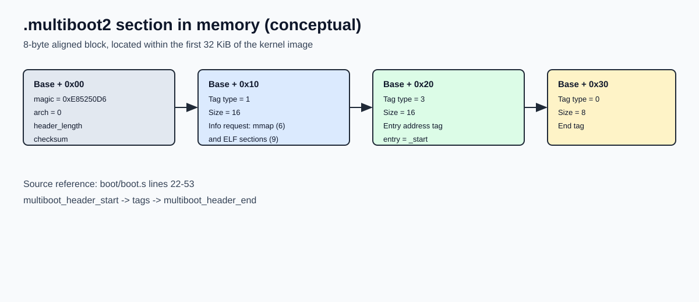
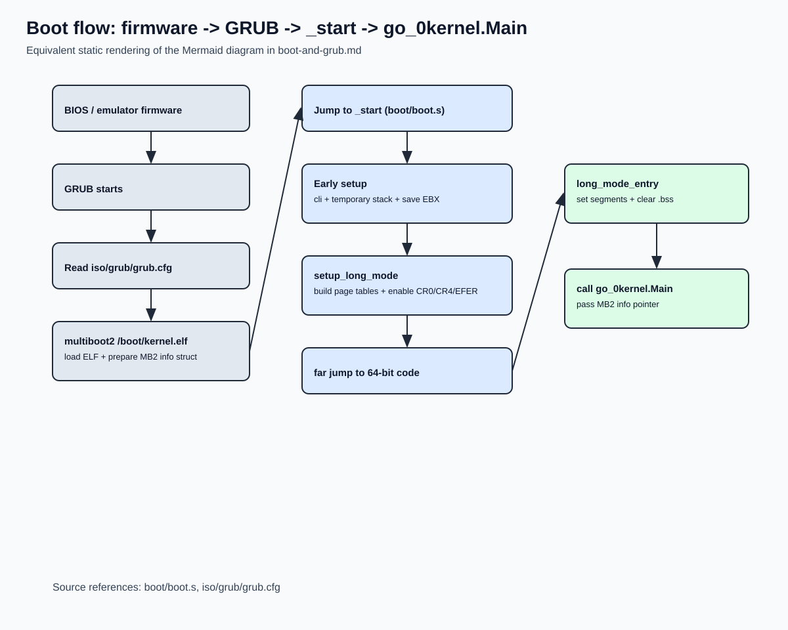

Boot and GRUB
Why this chapter matters
Boot is the boundary between firmware/bootloader world and your kernel world. If you understand this handoff, the rest of the kernel becomes much easier to reason about.
What GRUB does (manual-level view)
At a high level, GRUB is responsible for three things:
- Loading your kernel image (
kernel.elf) from disk - Preparing boot metadata (especially the Multiboot2 info structure)
- Jumping to your kernel entry point with a defined calling contract
In this project, GRUB is configured by iso/grub/grub.cfg:
menuentry "dav-go-os" {
multiboot2 /boot/kernel.elf
boot
}
The multiboot2 command tells GRUB to treat the kernel as a Multiboot2 kernel.
What GRUB expects from a Multiboot2 kernel
For GRUB to accept and boot a kernel, the image must include a valid Multiboot2 header. Here's the Multiboot2 specification.
Required header constraints
- Header must be 8-byte aligned
- Header must be located within the first 32 KiB of the kernel image
- Header must contain:
- magic (
0xE85250D6) - architecture (
0for i386 protected-mode entry) - header length
- checksum so the 32-bit sum is zero
How this is implemented in our code
In boot/boot.s (see boot/boot.s:22 through boot/boot.s:53):
.section .multiboot2multiboot_header_start/multiboot_header_end- header magic/arch/length/checksum fields
- end tag (
type=0,size=8)
We also add two useful tags:
- Information request tag (asks for memory map and ELF sections)
- Entry address tag (explicit
_start)
Graphical example: how .multiboot2 is laid out in memory
This is a conceptual in-memory layout of the header block loaded by GRUB. The exact base address can vary, but this block is inside the first 32 KiB of the kernel image.
flowchart TB
A[".multiboot2 base (8-byte aligned)"]
B["+0x00 magic = 0xE85250D6\n+0x04 arch = 0\n+0x08 header_length\n+0x0C checksum"]
C["+0x10 tag: information request\n(type=1, size=16)\nrequests mmap(6), elf sections(9)"]
D["+0x20 tag: entry address\n(type=3, size=16)\nentry = _start"]
E["+0x30 tag: end\n(type=0, size=8)"]
F["multiboot_header_end"]
A --> B --> C --> D --> E --> F
Rendered image:

Runtime meaning:
- GRUB scans this structure to validate that the image is a Multiboot2 kernel.
- If valid, GRUB loads the ELF, builds the Multiboot2 info structure, and jumps to
_start.
What GRUB passes at kernel entry
When GRUB transfers control to _start, the kernel gets:
EAX = 0x36D76289(Multiboot2 bootloader magic)EBX = physical address of Multiboot2 info structure
Our _start does this immediately:
cli(disable interrupts)- set
ESPtostack_top - copy
EBXintomultiboot_info_ptr - call
setup_long_mode
So the Multiboot2 pointer is preserved and later forwarded to Go (kernel.Main).
What the Multiboot2 info structure looks like
The structure pointed by EBX is a tag list in memory:
- starts with:
total_size(u32)reserved(u32)- followed by variable-size tags
- each tag is 8-byte aligned
- terminated by end tag (
type=0)
Our memory module (mem/multiboot.go) scans this structure and reads tag type=6 (memory map).
What we put in memory (our side)
GRUB loads the ELF, but the internal layout is decided by boot/linker.ld.
Linker placement policy
- Kernel load base:
1 MiB(. = 1M) - Section order:
.text(includes.multiboot2and code).rodata.data.bss.bootstrap_stack- Exported symbols:
__bss_start,__bss_end__bootstrap_end__kernel_end
Bootstrap-specific memory we allocate
In boot/boot.s, inside .bootstrap_stack:
- 16 KiB boot stack (
stack_bottom..stack_top) - Page tables for early long mode:
pml4(4 KiB)pdpt(4 KiB)pd0,pd1,pd2,pd3(4 x 4 KiB)- scratch
multiboot_info_ptr(stores the pointer fromEBX)
Visual boot flow (Mermaid)
flowchart TD
A[BIOS/Emulator firmware] --> B[GRUB]
B --> C[Read grub.cfg]
C --> D[multiboot2 /boot/kernel.elf]
D --> E[Load kernel ELF at 1 MiB region]
D --> F[Build Multiboot2 info structure in RAM]
E --> G[Jump to _start in boot/boot.s]
F --> G
G --> H[cli + setup temporary stack]
H --> I[Save EBX pointer to multiboot_info_ptr]
I --> J[setup_long_mode]
J --> K[Create PML4/PDPT/PD0..PD3]
K --> L[Enable PAE + EFER.LME + CR0.PG]
L --> M[Far jump to 64-bit code segment]
M --> N[long_mode_entry]
N --> O[Clear .bss]
O --> P[call go_0kernel.Main]
Rendered image:

Visual memory map (physical)
The exact end addresses depend on build size, but the structure is:
Low physical memory
0x00000000 -------------------------------------------------
| BIOS/legacy areas, low memory, IVT, etc. |
| (not managed by our boot code directly) |
0x00100000 ------------------------------------------------- <- linker base (1 MiB)
| .text |
| - Multiboot2 header (.multiboot2) |
| - _start and setup_long_mode code |
| .rodata (includes gdt64/gdt64_desc) |
| .data |
| .bss (cleared in long_mode_entry) |
| .bootstrap_stack |
| - 16 KiB stack |
| - pml4/pdpt/pd0..pd3 |
| - multiboot_info_ptr |
__kernel_end ------------------------------------------------- <- end of kernel image region
| free/usable RAM (depends on Multiboot map) |
| ... |
| Multiboot2 info structure (address in EBX) |
| location chosen by GRUB |
High memory -------------------------------------------------
Visual map of early paging
In setup_long_mode, we build identity mapping for the first 4 GiB with 2 MiB pages:
Virtual address Physical address
0x00000000 - 0xFFFFFFFF -> 0x00000000 - 0xFFFFFFFF (via pd0+pd1+pd2+pd3)
PML4[0] -> PDPT
PDPT[0] -> PD0 (maps first 1 GiB)
PDPT[1] -> PD1 (maps second 1 GiB)
PDPT[2] -> PD2 (maps third 1 GiB)
PDPT[3] -> PD3 (maps fourth 1 GiB)
Each PD entry maps one 2 MiB page (PS bit set).
This is why early code can still access low physical addresses directly after switching to long mode.
Step-by-step: GRUB contract vs our implementation
| Boot contract item | Required by GRUB/Multiboot2 | Our implementation |
|---|---|---|
| Multiboot2 header in first 32 KiB | Yes | .multiboot2 section in boot/boot.s, included early in .text |
| 8-byte alignment | Yes | .align 8 around header/tags |
| Valid checksum | Yes | computed in header definition |
| Entry point | Needed | _start + entry-address tag |
| Boot info pointer | EBX |
saved to multiboot_info_ptr, later passed to Go |
| Switch to 64-bit mode | Kernel responsibility | setup_long_mode in boot/boot.s |
Clean .bss before high-level runtime |
Kernel responsibility | rep stosb in long_mode_entry |
| Call language runtime/kernel main | Kernel responsibility | call go_0kernel.Main |
Where to continue
After this chapter, continue with:
docs/manual/02-boot/linker-and-initial-memory-layout.md
That page focuses on linker symbols and why memory allocator safety depends on them.